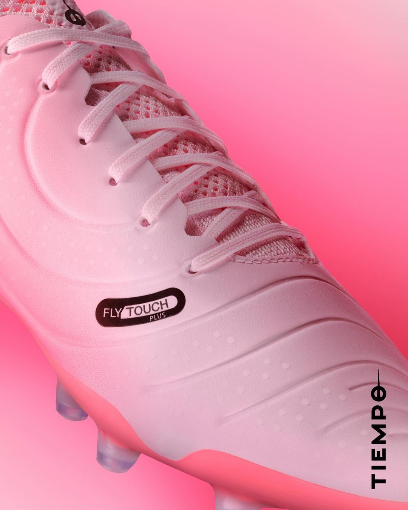
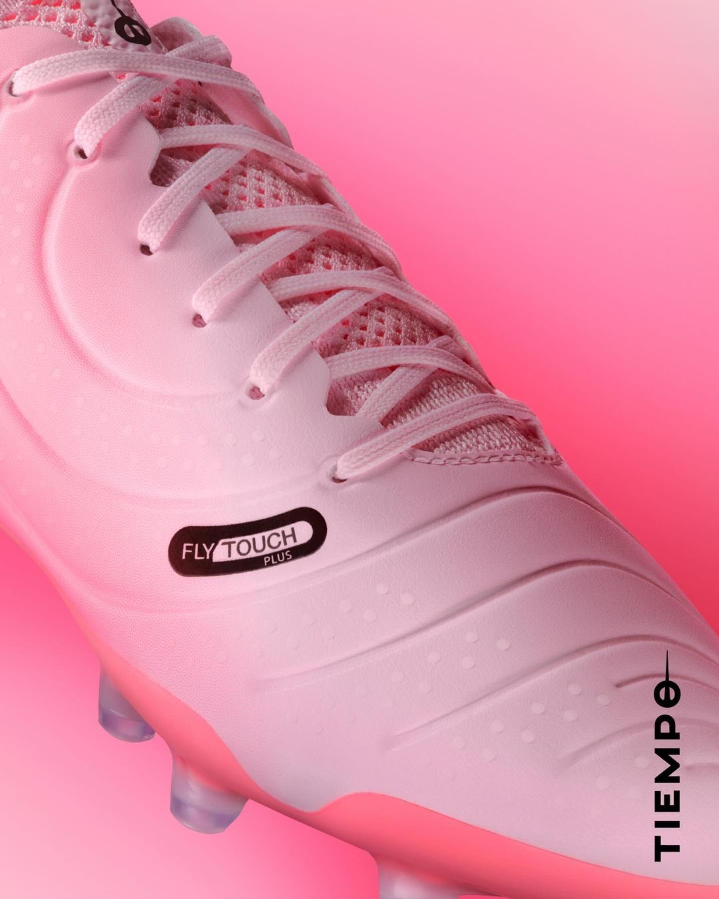

NIKE
Nike onthult drie geniale voetbalschoenen als onderdeel van het "Mad Brilliance" pack
Nike Reveal The 'Mad Brilliance' Pack Ahead Of This Summer's International Tournaments
Met de Champions League finale, het Europees kampioenschap en de Copa América in aantocht, had Nike geen beter
moment kunnen kiezen om het geniale 'Mad Brilliance' pack te lanceren. De opstelling van het pack is ook
onthuld, bestaande uit drie voetbalschoenen. Zo zijn de Mercurial, Phantom en de Tiempo voorzien van een
heerlijke roze kleurstelling, perfect voor de zomer.
Tijdens het EK in Duitsland en de Copa América in de Verenigde Staten zullen diverse grote sterren schitteren
op de roze Tiempo's, Mercurials en Phantoms uit het Mad Brilliance pack. Strik je veters, het is tijd om je
voetbalschoenen te upgraden en je voetbalspel naar een geniaal niveau te tillen.
Roze Nike Mercurial voetbalschoenen als onderdeel van het Mad Brilliance pack
De Nike Mercurial voetbalschoen staat bekend om zijn focus op snelheid en prestaties. Deze schoenen zijn speciaal ontworpen om je wendbaarheid en versnelling te verbeteren door het gebruik van premium materialen die een uitstekende pasvorm, superieure touch en controle bieden. Het Mad Brilliance pack van Nike omvat twee varianten: de Mercurial Superfly 9 en de Mercurial Vapor 15, beide uitgevoerd in een aantrekkelijke Pink Foam colorway.
Nike Mercurial Superfly 9
Deze voetbalschoen onderscheidt zich met een hoog uitgesneden kraag, bekend als de Dynamic Fit Collar. Dit ontwerp biedt extra enkelondersteuning, wat bijdraagt aan stabiliteit tijdens snelle bewegingen. Het bovenwerk van de Superfly 9 is gemaakt van Flyknit materiaal, dat zich als een tweede huid om de voet vormt en zowel flexibiliteit als ondersteuning biedt. De schoen is voorzien van een Aerotrack plaat op de zool, die de grip verbetert en je helpt explosief aan de wedstrijd te beginnen. Verder is de NikeSkin technologie verwerkt in het bovenwerk, waardoor het oppervlak een textuur krijgt die de balcontrole onder verschillende weersomstandigheden verbetert.
Nike Mercurial Vapor 15
Heb je liever een laag uitgesneden schoen? Dan is de Nike Mercurial Vapor 15 de ideale voetbalschoen voor jou. De Vapor 15 is ongelooflijk licht, waardoor je nauwelijks merkt dat je schoenen aan hebt, wat resulteert in maximale snelheid op het veld. De laag uitgesneden kraag zorgt voor een meer conventionele pasvorm, geliefd bij spelers die de voorkeur geven aan een vrijer gevoel rond de enkels. Net als de Superfly 9, beschikt de Vapor 15 over een Aerotrack zoolplaat voor optimale grip en versnelling. Het materiaal aan de bovenkant bevat NikeSkin technologie, die je eerste aanname en controle over de bal verbetert.
Mad Brilliance packRoze Nike Tiempo voetbalschoenen als onderdeel van het Mad Brilliance pack
De Nike Tiempo-lijn is bekend om zijn focus op comfort en duurzaamheid, waardoor deze voetbalschoenen populair zijn bij spelers die waarde hechten aan comfort en het vermijden van pijnlijke voeten na een wedstrijd. Premium leren materialen worden gecombineerd met moderne technologieën om je prestaties op het veld naar een hoger niveau te tillen. Zowel de Nike Tiempo Legend 10 Academy als de Pro maken deel uit van het Mad Brilliance Pack van Nike.
Nike Tiempo Legend 10 Academy
De Nike Tiempo Legend 10 Academy biedt een uitgebalanceerde combinatie van kwaliteit en performance. Het bovenwerk van zacht leer voelt uiterst comfortabel aan en biedt uitstekende balcontrole. Het leer vormt zich na verloop van tijd naar de voet, wat zorgt voor een unieke pasvorm en verhoogd comfort. De Legend 10 Academy bevat ook enkele van Nike's nieuwste technologieën voor verbeterde duurzaamheid en ondersteuning.
Nike Tiempo Legend 10 Pro
Voor wie de lat nog hoger wil leggen, is de Nike Tiempo Legend 10 Pro de ideale keuze. Dit model is eveneens vervaardigd uit premium leer, wat niet alleen zorgt voor superieure balgevoel en controle, maar ook voor een uitzonderlijk comfortabel gevoel aan de voeten. De Legend 10 Pro integreert geavanceerde dempings- en ondersteuningstechnologieën die het comfort verhogen en vermoeidheid in de voeten verminderen. Dit model kenmerkt zich door een verfijndere pasvorm en afwerking, met extra aandacht voor detail.
Mad Brilliance pack 

Roze Nike Phantom voetbalschoenen als onderdeel van het Mad Brilliance pack
De laatste toevoeging aan het Mad Brilliance pack is de Nike Phantom voetbalschoen, ontworpen voor creatieve en technische spelers. De Phantom serie is perfect voor spelers die bekend staan om hun flair op het veld. Deze schoenen zijn bijzonder populair onder spelmakers en aanvallers en zijn in dit pack uitgevoerd in een aantrekkelijke roze colorway.
Nike Phantom Luna 2
De Nike Phantom Luna 2 benadrukt behendigheid en snelle, scherpe bewegingen. Het bovenwerk van de schoen is voorzien van een textuur die uitstekende grip en controle over de bal biedt, wat je helpt de bal met precisie te behandelen. Deze lichte schoen biedt een responsief gevoel dat snel voetenwerk naar een hoger niveau tilt. De pasvorm van de Luna 2 is strak en stevig, wat zorgt voor een veilig gevoel rond de enkels.
Nike Phantom GX2
Ben je meer van de nieuwste technologie en designelementen? dan is de Nike Phantom GX2 iets voor jou. Deze schoen is aan de bovenkant voorzien van geavanceerd materiaal dat zelfs onder wisselende weersomstandigheden een uitstekende balcontrole garandeert. De GX2 maakt gebruik van de nieuwste Nike dempings- en ondersteuningssystemen voor maximaal comfort en minder druk op de voet tijdens lange wedstrijden. Met een focus op stabiliteit is deze schoen ideaal voor spelers die veel kilometers maken op het veld.
Mad Brilliance pack